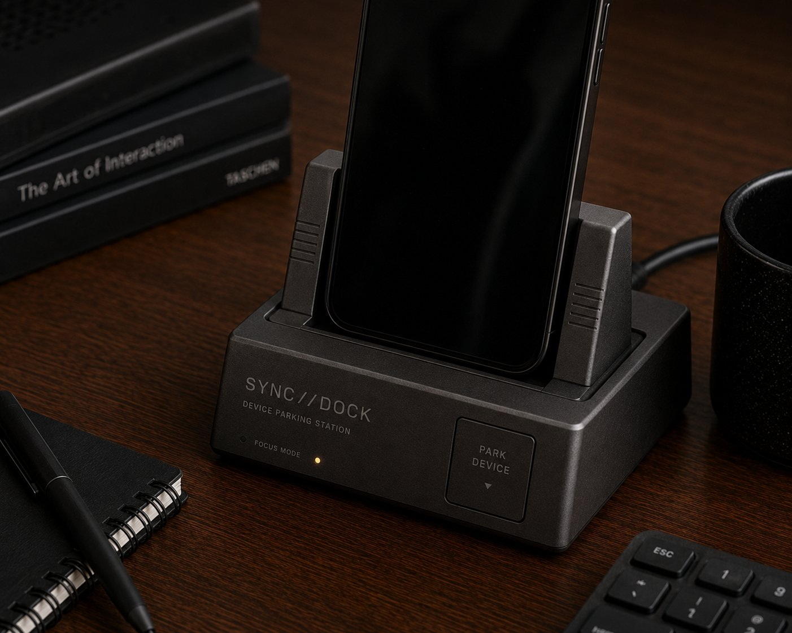
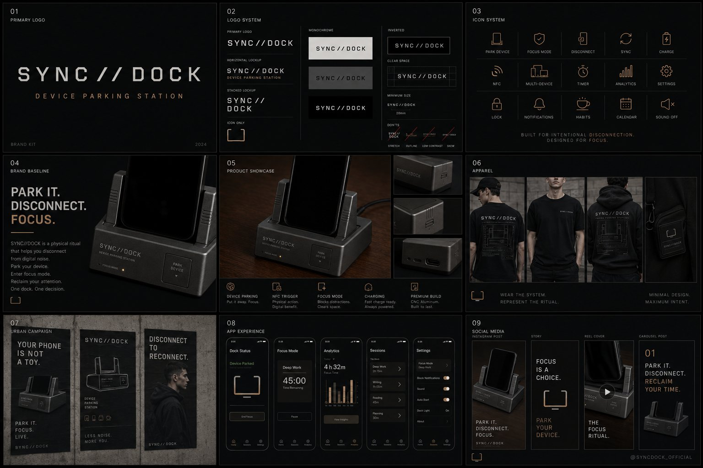

A docking station inspired by early PDA cradles that forces an intentional "device parking." The act of placing your phone in the dock is the focus mode — the disconnect ritual triggers do-not-disturb, dim the lights, start the timer.
Drop the phone into the dock. The cradle accepts it with a soft pull-in from the magnets.
NFC fires the routine — do-not-disturb on, lights dimmed, timer started, calendar pulled.
The phone is across the room, charging, untouchable. Focus is the absence of the device.
Putting the phone away is the act. The dock is the visible commitment to focus.
Routine fires the moment the phone touches the dock — no prompts, no confirmation.
CNC aluminium dock, weighted base, hidden magnets. Looks at home next to good design.
HomeKit, Home Assistant, IFTTT. Docking is the trigger for whatever scene you wired up.
Two-device dock or three-device. Pair with watch, phone, AirPods — full ritual.
A dock per person. Dinner-table docking station — phones away, conversation on.

Sync//Dock launches into a market hungry for friction with their phones. Single-dock for early backers; later tiers unlock multi-device and family editions.